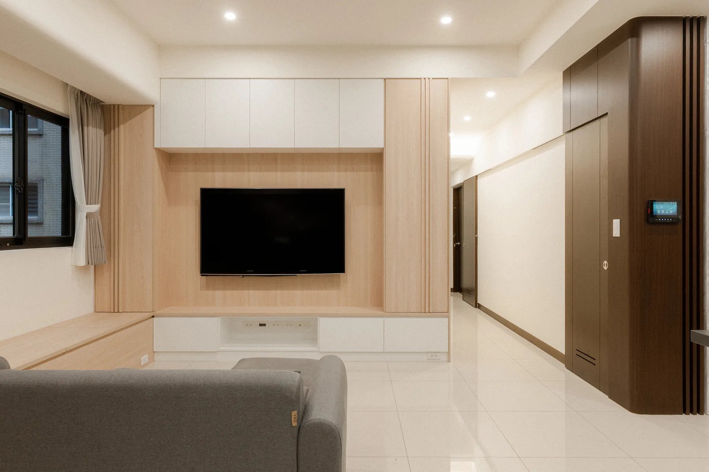
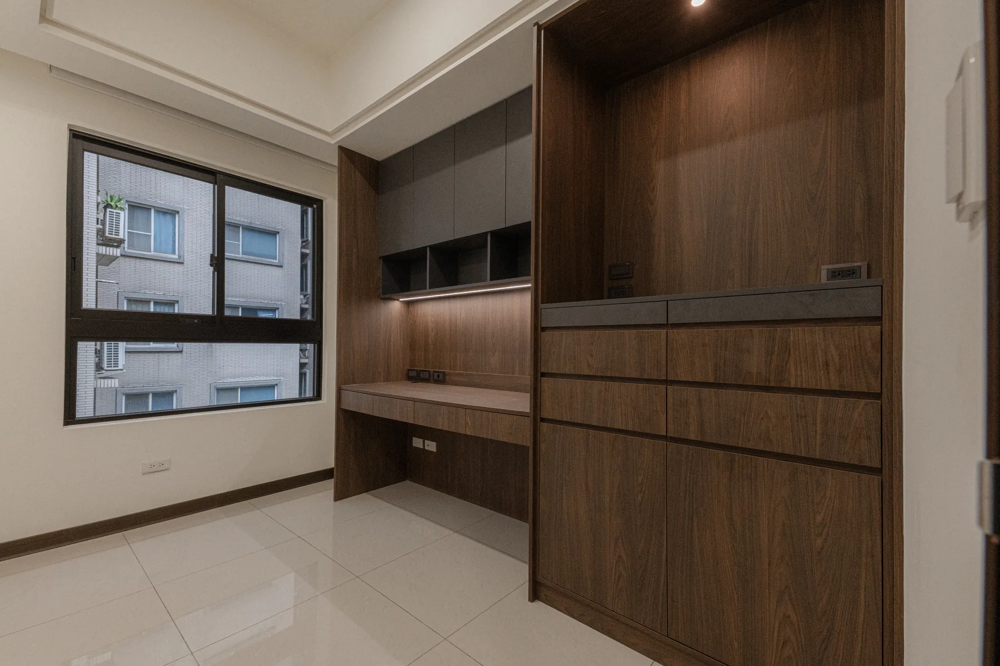
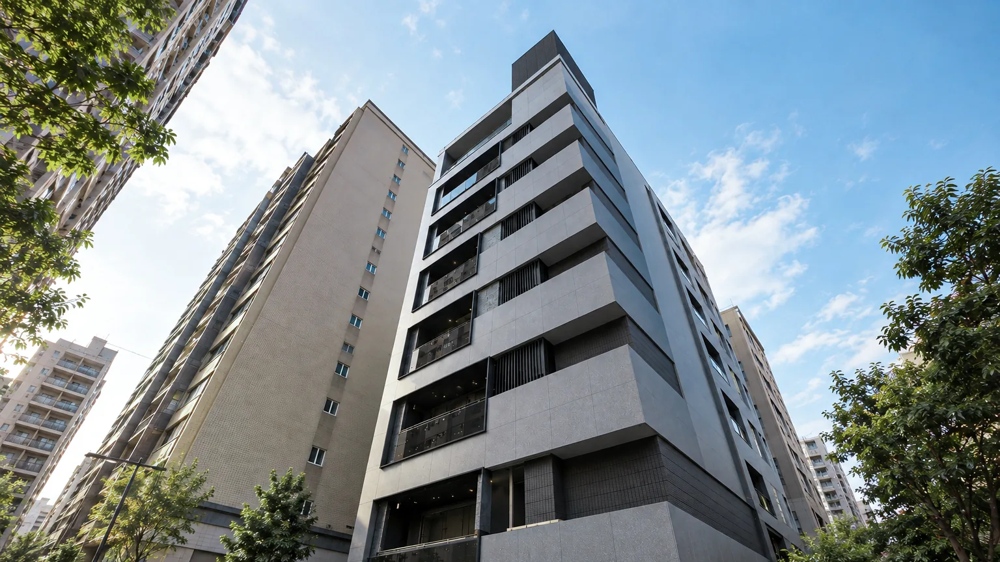

PROJECT 03 XINDIAN
新店中央五街 113 號
收錄二樓、三樓與六樓的住宅實景，依不同樓層整理廚房、起居與收納，呈現各自的生活樣貌。
A HOME, FLOOR BY FLOOR
依不同樓層，回應各自的生活需求
從二樓的廚房、三樓的起居空間到六樓的工作與收納，依照每一層的使用情境整理空間，讓日常所需各自清楚、彼此連貫。
- 空間類型
- 住宅室內
- 案例內容
- 二樓、三樓與六樓實景
- 設計重點
- 廚房、起居、工作與收納



